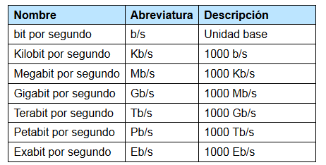
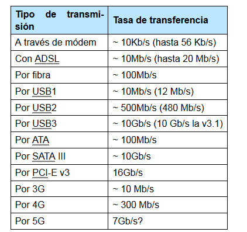

La información no solo se almacena, también se transmite. Por eso, también es interesante saber cuánta información es capaz de ser enviada o recibida por unidad de tiempo (el segundo del sistema internacional de unidades).
A diferencia de las unidades anteriores, la velocidad se mide en múltiplos de 1000 y no usa el byte como base, sino el bit:
Para hacerse una idea del orden de magnitud en la que se transmite la información, observad la tabla de la derecha:
